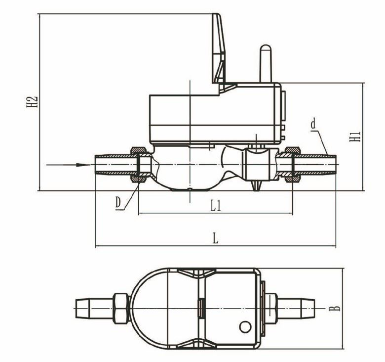

E-mail:
info@sh-meters.comCall Us:
+86 13131984716
Features&Benefits
With anti-magnetic interference function that when the two reed switches pick up caused by the magnetic interference the valve closes off auomatically; It automatically opens when the interference stops.
With the battery voltage detection function, it can pass the power-off information to the management platform when the battery almost runs out, facilitating the administrator to find that;
Module with automatic data storage funcion when power down arises assuring the data won't lost when power down, and when the power supply. recovers, it is able to continue to work properly.
The joint of the GPRS module and the base meter uses the integrated structure, with built-in antenna, reducing the demage of antenna in the process of installation.
The communication distance of the wirelesss module is not have distance limited.
The module uses of deep dormancy time design, it is able to copletely close the wireless module during the deep dormancy time period (not in operation during night time ), which drastically help reduce the power consumption;
Whole circuit board uses of ultra low power consumption design, power supply by high capacity lithium battery, battery life over 6 years;
Is able to set up the metering devices by the handset reader and check the orginal data and data from meter reading;
AMI function that the system is able to control the shut on/off of the valve on real time by the help of the valve.
Outline dimensional drawing

Technical specifications
 Multi-jet Water Flow Meter
Multi-jet Water Flow Meter Cold Multi Jet Water Meter Blue Brass Body
Cold Multi Jet Water Meter Blue Brass Body Brass Body Multi Jet Water Meter
Brass Body Multi Jet Water Meter Bulk Industrial Woltman Water Meter
Bulk Industrial Woltman Water Meter Pulse Output Mechanism Multijet Water Meter
Pulse Output Mechanism Multijet Water Meter